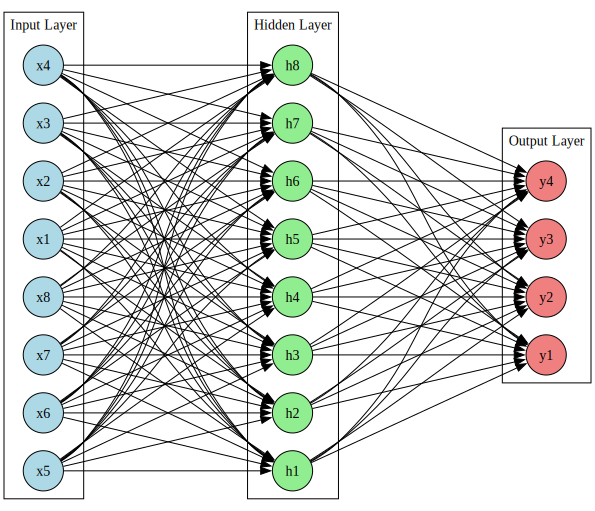
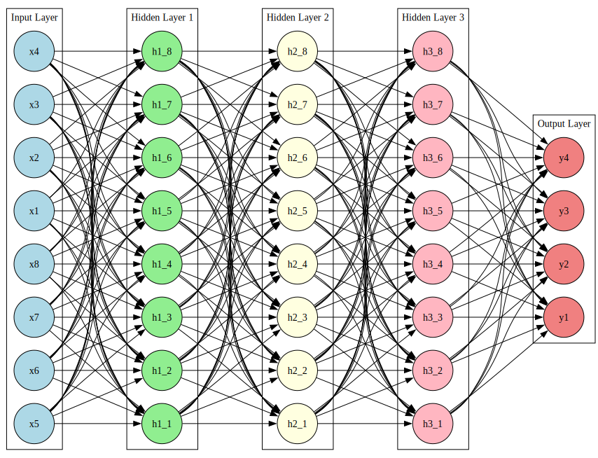

Introduction to AI/ML/LLM for Humanities and Social Science
falbrezzi@ucla.edu
rmhorne@ucla.edu
Introductions
Hello! 👋
Francesca Albrezzi, PhD
- Digital Research Manager and Specialist in OARC
- Taught for DH and World Arts & Cultures/Dance (WACD)
- Editor-in-Chief and Director of the virtual gallery for the International Journal of Digital Art History
- UC Women in Tech Committee Member
- Expertise in Extended Reality (XR) Technologies
Ryan Horne, PhD
Agenda
What AI is Good At
- Pattern recognition
- Language processing
- Image analysis
What AI is NOT Good At
- In-depth analysis
- Contextual understanding
- Nuanced interpretation
Current State of AI @ UCLA
- AI FAQs
- Chris Mattmann - Chief Data and Artificial Intelligence Officer
- [IT services has a page on ethical services of AI] (https://it.ucla.edu/news/new-resource-generative-ai-ucla)
Classification of AI Systems
Artificial Narrow Intelligence
- perform a narrow task with an assigned data set or
- operate within certain specified parameters
- Google Translate, Siri, and Alexa
Artificial General Intelligence{.section-2}
- expected to learn and reason with without human intervention
- same cognativbe level as humans
Artificial Super Intelligence
- Far surpasses human abilities
- singularity
Singulartiy
Neural Network
A neural network is a computational model inspired by the human brain, designed to recognize patterns and relationships in data.
- Made up of layers of nodes (neurons).
- Each neuron processes inputs and passes the result to the next layer.
- Learns by adjusting weights through training
- Used For
- Image recognition, natural language processing, speech recognition, and more.
Neural Net
Deep Neural Net
Definition and Basic Concepts
- Neural Networks, AI, and ML
- Glossary
Historical Development
- Key milestones
- Resources for further reading
Importance & Applications
- Digital Humanities and North Campus disciplines
- Current research and use cases at UCLA
Strengths and Limitations
What AI is Good At
- Pattern recognition
- Language processing
- Image analysis
What AI is NOT Good At
- In-depth analysis
- Contextual understanding
- Nuanced interpretation
GoFAI vs. Generative AI
Large Language Models (LLMs)
Overview
- Key components (Transformers, Attention Mechanisms)
- Training processes and dataset types
Popular LLMs
- GPT-3, BERT
Applications in Digital Humanities
- Text analysis, translation, content generation
- Case Study: Literary Event Detection
How LLMs Can Help
Use Cases
- Brainstorming and outlining
- Prompt engineering for better AI responses
Demos
- Outline an AI presentation
- AI-assisted code generation
- Pleiades to Neo4j workflows
- NLP Twitter / Bluesky data
Issues
- Generated essays & ghost citations
- Ethical concerns
Large Vision Models (LVMs) & Vision Language Models (VLMs)
Large Vision Models (LVMs) / Large Image Models: - AI systems designed to analyze visual data (images, videos). - Trained on vast datasets of images/videos. - Applications: Image classification, object detection, image segmentation, image generation, scene interpretation. Vision Language Models (VLMs): - Combine LVM capabilities with Natural Language Processing (NLP). - Applications: Creating text descriptions for images, answering questions about visual data, generating images from text prompts. Case Study: The Living Museum App https://www.livingmuseum.app/
::: {.notes} Large Vision Models (LVMs), also known as large image models, are AI systems that are designed to analyze visual data. Trained with large image or video datasets, LVMs are used in image classification, object detection, image segmentation, image generation, and scene interpretation. Another AI system that is applicable to visual resource research are Vision Language Models (VLMs), which combine NLP with LVMs to create textual descriptions for images, answer questions about visual data or create visual data based on text inputs. For example, Jonathan Talmi’s Living Museum app (https://www.livingmuseum.app/) uses Generative AI to allow users to have “conversations” with the objects in the British Museum’s online collection (Museums + Heritage Advisor, 2024). In The Living Museum app (https://www.livingmuseum.app/), the model is not constrained to the British museum’s archival metadata or a specific curator’s comments, but draws on outside sources to respond to wide questions about culture, history, and artistic process and practice. If we are not aware of all the sources of information that the AI’s answers are being drawn from, how is the user expected to assess the validity of the information as well as weight contextual positioning of the information? Does authorship of information matter in this context? Why or why not? What issues arise when AI becomes the voice for a museum object? Pick an object and ask it questions. What can the AI “see” and what does it miss? :::
How AI “Sees”
Example: Handwriting Analysis with AI - AI Model: e.g., Siamese Convolutional Neural Network (CNN). Process: - Feature Identification: Focuses on key elements of handwriting style. - Abstraction: Generates abstract numerical representations (feature vectors) for these significant elements. - Comparison: Measures the similarity or difference between these numerical representations from different handwriting samples (calculating the magnitude of difference). - Learning: Converts images into a numerical network, assigning varying values (weights) to different features, effectively learning to distinguish individual writing styles. Source: Du, William, Michael Fang and Margaret Shen. 2017. “Siamese Convolutional Neural Networks for Authorship Verification.” http://cs231n.stanford.edu/reports/2017/pdfs/801.pdf.
::: {.notes} But how does a computer “see”? Deep machine learning for visual material often operates by identifying the most important features or most uniquely characteristic features of the visual material. If you wanted to do a handwriting analysis, the AI network—e.g., a Siamese Convolutional Neural Network (CNN)—would focus on identifying the most important features of handwriting, generating abstract features as a numerical representation of those elements it deemed significant. By essentially measuring the similarity or difference of those repeating features, the network can calculate the magnitude of differences between handwriting samples. Through a process of converting images to a numerical network, the model assigned varying values to different features, effectively learning to distinguish between individual writing styles (Du et. al, 2017). Akrish Adhikari recently presented here at UCLA on how determining whose penmanship is present in a particular document can determine authorship. In addition, there is a distinction between the act of thinking and the physical act of writing, which can underscore the significant labor of editors and transcriptionists, whose contributions profoundly shape our understanding of authorship. Marginalia is an important part of literary history and knowing who made what suggested edit can help us better understand the influence of thought on a particular piece of writing. :::
Handwriting Analysis Tool (HAT)
Handwriting Analysis Tool (HAT) Case Study: Alexander Hamilton & George Washington Papers - https://www.loc.gov/collections/george-washington-papers/about-this-collection/ - https://www.loc.gov/collections/alexander-hamilton-papers/about-this-collection/
Future of AI & ML in Digital Humanities
Fine-Tuning AI for Humanities Research
- Domain expertise in model refinement
- Example: Human Pose Estimation (Bernasconi et al., 2023)
Technical Barriers
- AI-assisted tools like Microsoft’s Co-Pilot
- Accessibility and skill development
Open vs. Closed AI
- Innovation, accessibility, and security concerns
- Ollama: Local AI
- Retrieval-Augmented Generation (RAG)
Luna, Angela. “The Open or Closed AI Dilemma.” Bipartisan Policy Center Blog, May 2, 2024, https://bipartisanpolicy.org/blog/the-open-or-closed-ai-dilemma/. Accessed March 6, 2025.
South, Tobin, Jules Drean, Abhishek Singh, Guy Zyskind, Robert Mahari, Vivek Sharma, Praneeth Vepakomma, Lalana Kagal, Srinivas Devadas, and Alex Pentland. 2024. “A Roadmap for End-to-End Privacy and Security in Generative AI.” An MIT Exploration of Generative AI, September. https://doi.org/10.21428/e4baedd9.9af67664.
Key Definitions
- Open AI (e.g., open-source models)
- Closed AI (e.g., proprietary systems)
Implications
- Innovation, accessibility, and security concerns
- Ollama: Local AI
- Retrieval-Augmented Generation (RAG)
Ethical & Privacy Concerns
- AI decision-making in banking, housing, credit
Ethical Concerns
Trust & Authenticity
- AI’s role in misinformation/disinformation
- Deepfakes & synthetic media
- Detection & prevention strategies
Bias & Fairness
- Algorithmic bias (Joy Buolamwini’s research)
- Mitigation strategies & ethical data collection
Academic Integrity
- AI-generated content accuracy
- Copyright & ownership debates
Future Directions & Trends
Emerging Technologies
- Advances in neural networks
- AI’s evolving role in Digital Humanities
Ethical AI at UCLA
Further Learning
- Courses, articles, and bibliography
Discussion & Questions